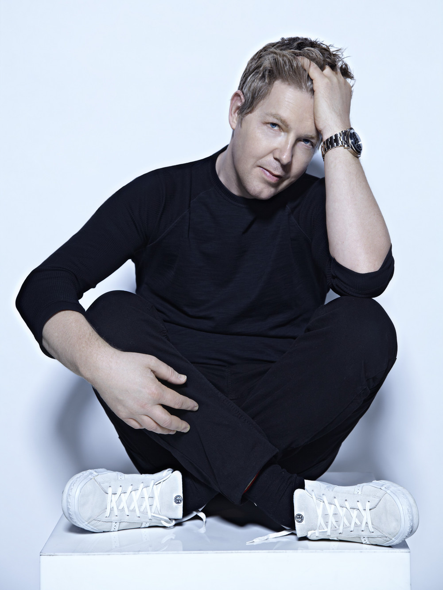
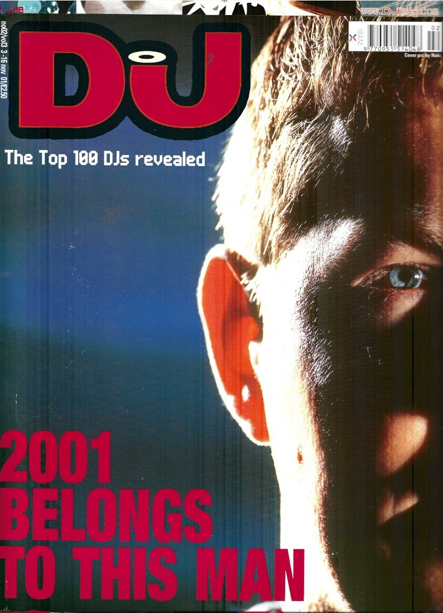

John Digweed (Hastings, Inglaterra; 1 de enero de 1967) es un disc jockey y productor musical británico. Comenzó a hacer mezclas alrededor de los 13 años de edad. Su primer trabajo formal como DJ fue en el club Renaissance en Londres después de que Alexander Coe, alias Sasha, escuchara su demo y lo aprobara.
A lo largo de su carrera, Digweed se ha concentrado principalmente en su labor como DJ, dejando en cierta forma de lado su faceta de productor. Aunque solo ha publicado un puñado de mixes con el alias de Bedrock como productor, como DJ es considerado de forma unánime como uno de los mejores del mundo. En 2001, fue elegido como el mejor DJ del mundo por la revista DJmag, y en 2011 ocupó el puesto número 55 en esa misma revista. Además, en la revista TheDjlist, se le considera el número 45 de los mejores DJ del mundo.
Su estilo, conocido como “House épico”, lo ha convertido en un icono máximo del género electrónico Progressive House. John Digweed es reconocido mundialmente por sus sets de alta calidad y su habilidad para mezclar junto a Sasha en cabina.
Digweed ha gozado de popularidad en toda América del Norte y Europa. Él y Sasha establecieron una residencia mensual en el ahora desaparecido club Twilo de Nueva York , que resultó ser un lugar clave para la escena de la música electrónica estadounidense. [24] La residencia comenzó en 1997 con una tibia recepción, pero se convirtió en una de las noches de club más populares de la ciudad de Nueva York al final de su carrera en 2001. [25] Sasha y Digweed tocaron en Twilo el último viernes de todos los meses, [26] tocando sets que duraban entre ocho y doce horas. A principios de 2001, Sasha sufrió una lesión en el oído y no pudo jugar durante sus últimas cuatro fechas antes de que las autoridades de la ciudad de Nueva York cerraran Twilo. Digweed continuó tocando solo en ese horario hasta el 6 de mayo de 2001, cuando Twilo fue allanado por la policía de Nueva York y posteriormente obligado a cerrar.
En 2001, John Digweed encabezó la encuesta de los 100 mejores DJ de DJ Mag por primera vez. Digweed aceptó su premio en una de las primeras fiestas de premiación en el Institute Heaven de Londres, con Sasha y Danny Tenaglia obteniendo el segundo y tercer lugar respectivamente. Los resultados de la encuesta Top 100 DJs 2023 de DJ Mag, en apoyo de Unicef, se anunciarán el 15 de noviembre. El evento de transmisión global, que se transmite exclusivamente en el canal de YouTube de DJ Mag, tendrá lugar el miércoles 15 de noviembre a las 6 p.m. GMT / 7 p.m. CET / 2 p.m. ET. La entrega de premios, que se presenta desde The Standard, Ibiza por Arielle Free de BBC Radio One, contará con cinco presentaciones de DJ desde ubicaciones únicas que abarcan cuatro continentes, junto con una revelación de los resultados de los 100 mejores DJ de 2023. El programa se desarrollará en secuencia con una cuenta regresiva de las redes sociales en Instagram y X de DJ Mag, anteriormente canales de Twitter, que comienza a las 5:30 p.m. GMT del mismo día.
